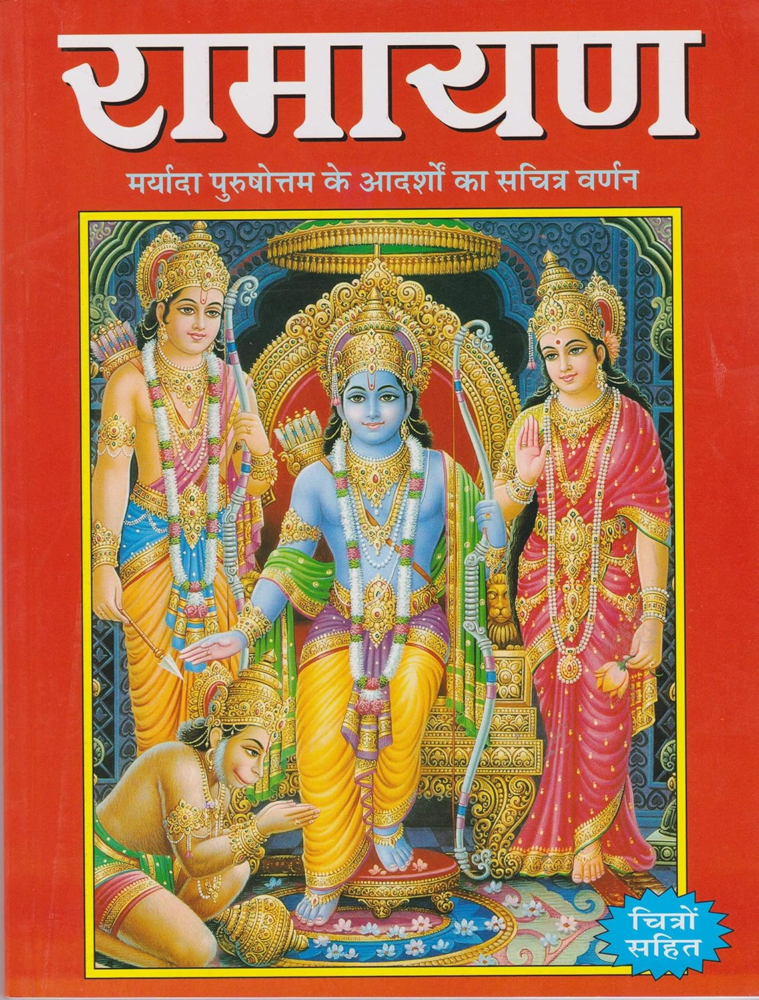

Summary:
The Ramayana is one of the two major Sanskrit epics of ancient Indian literature, the other being the Mahabharata. It's a tale rich in mythology, history, and moral lessons. Here's a brief summary: The Ramayana follows the story of Rama, the prince of Ayodhya, who is sent into exile for 14 years due to the machinations of his stepmother, Kaikeyi. Accompanied by his devoted wife, Sita, and loyal brother, Lakshmana, Rama ventures into the forest. During their exile, Sita is abducted by Ravana, the ten-headed demon king of Lanka. Rama, with the help of an army of monkeys led by Hanuman and Sugriva, wages a war against Ravana to rescue Sita. The battle culminates in Rama's victory over Ravana, symbolizing the triumph of good over evil. The epic concludes with Rama and Sita returning to Ayodhya, where Rama is crowned king, heralding a period of peace and prosperity. The Ramayana, attributed to the sage Valmiki, is not just a story but a profound narrative that imparts virtues like loyalty, courage, and righteousness.